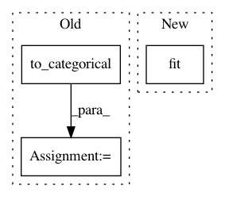

eb4212aff509af724c5cc011a72c5d181ae12ae4,tslearn/shapelets.py,ShapeletModel,fit,#ShapeletModel#Any#Any#,256
Before Change
n_ts, sz, d = X.shape
self.d = d
if y.ndim == 1:
y_ = to_categorical(y)
else:
y_ = y
self.categorical_y = True
n_classes = y_.shape[1]
After Change
n_ts, sz, d = X.shape
self.d = d
if y.ndim == 1:
self.label_binarizer = LabelBinarizer().fit(y)
y_ = self.label_binarizer.transform(y)
else:
y_ = y
self.categorical_y = True
In pattern: SUPERPATTERN
Frequency: 3
Non-data size: 3
Instances
Project Name: rtavenar/tslearn
Commit Name: eb4212aff509af724c5cc011a72c5d181ae12ae4
Time: 2017-10-27
Author: romain.tavenard@univ-rennes2.fr
File Name: tslearn/shapelets.py
Class Name: ShapeletModel
Method Name: fit
Project Name: IBM/adversarial-robustness-toolbox
Commit Name: 1aff940e60d7d62bd82ddf7469e666197832e212
Time: 2017-05-11
Author: valentina.zantedeschi@ibm.com
File Name: src/classifiers/cnn_unittest.py
Class Name: TestCNNModel
Method Name: test_cifar
Project Name: IBM/adversarial-robustness-toolbox
Commit Name: 1aff940e60d7d62bd82ddf7469e666197832e212
Time: 2017-05-11
Author: valentina.zantedeschi@ibm.com
File Name: src/classifiers/cnn_unittest.py
Class Name: TestCNNModel
Method Name: test_mnist